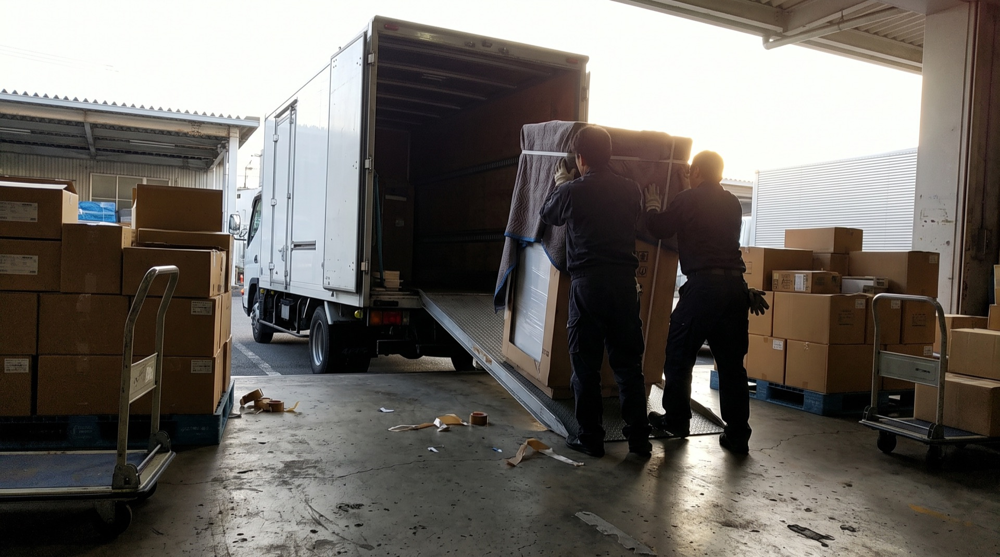
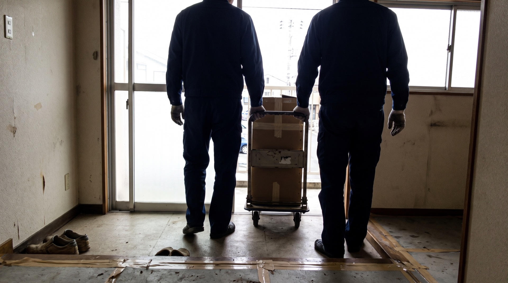
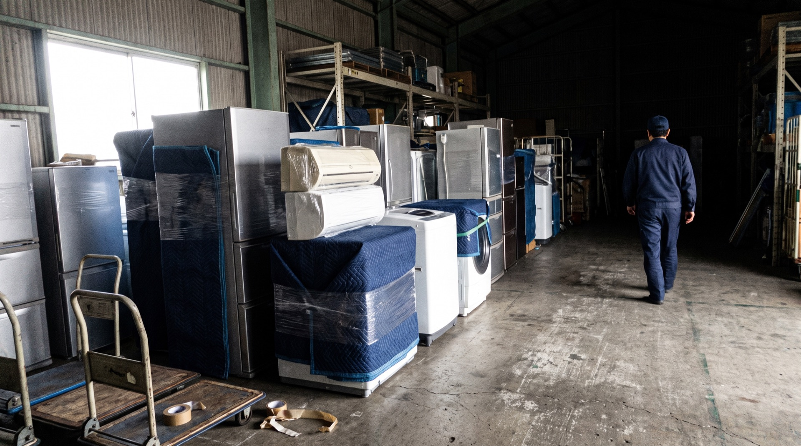
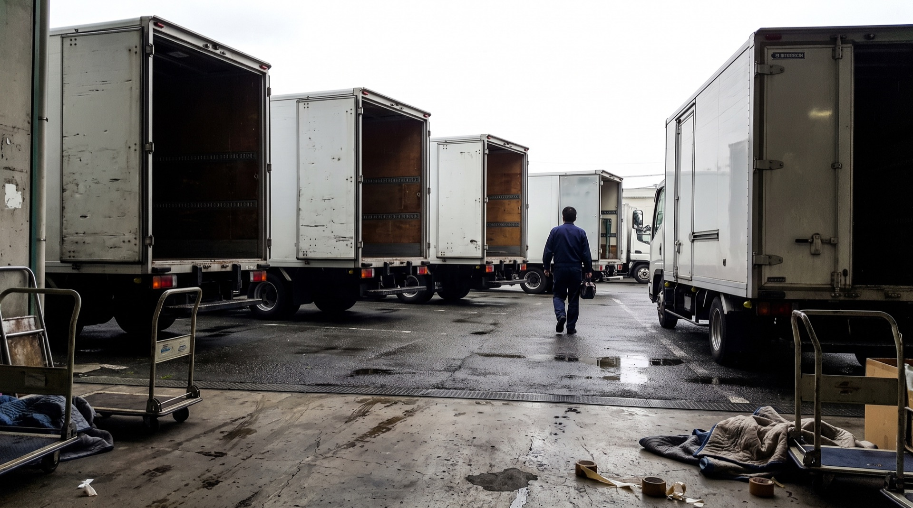

THREE PRINCIPLES
三原則
胸に掲げ、最後まで責任ある仕事を。



ABOUT US
ABOUT US
倉庫から倉庫へ運ぶ仕事ではありません。人が暮らしている部屋に上がって、床と壁と商品を傷つけずに作業して帰ります。1986年から、そればかりやってきました。

THREE PRINCIPLES
胸に掲げ、最後まで責任ある仕事を。
OUR RULES
個人のお宅に上がる仕事です。長く決めて、守っていることを並べます。
01
髭や茶髪など、お客様が不快に感じる身なりでは伺いません。制服は貸与し、汚れたまま次のお宅へ行かないようにしています。
02
お客様の家の前に停める車です。車内も車体も、汚れたままにしません。
03
冷蔵庫は年々大きく、重くなっています。内階段・カウンター越えも含めて、まず経路を確認します。難しい場合はクレーン作業（有料）で対応します。お見積りは無料です。
04
無理に入れて壁や商品を傷めることはしません。入らないと分かった時点で、その場でお伝えします。
05
洗濯機は水漏れが一番こわい作業です。蛇口の交換部品や振動防止のゴム板を、あらかじめ用意して伺います。
06
お掃除ロボット付き、換気機能付きなど、正しく設置しないと機能が使えない機種が増えています。新製品の情報は常に共有しています。
MESSAGE
代表取締役
渡邊 勝貴
家電製品一筋で、
ここまで来ました。
初めは配送業務のみでした。電気工事業の看板を掲げてから、配送・取付・設置まで一貫して行えるようになりました。エアコンも、アンテナも、温水洗浄便座も、運んだ担当がそのまま付けて帰ります。
玄関を出る前にスイッチを入れて、動くところまで確かめる。荷物を届けて終わりにせず、その日から使える状態にしてお渡しする。それを続けてきました。
1986年の創業から、浦安と川口の2拠点で、東京・千葉・埼玉・神奈川のお宅に伺っています。これからも同じやり方を続けます。
HEAD OFFICE

千葉県浦安市
〒279-0043KAWAGUCHI

埼玉県川口市
〒333-0816AREA
東京湾をはさんだ2拠点から伺います。エリア外でも、まずご相談ください。
産業廃棄物収集運搬業の許可も、この4都県で取得しています。配送から引き取りまで、同じ日に終わります。
OUTLINE
| 商号 | 有限会社エイト流通サービス |
|---|---|
| 設立 | 1986年7月2日 |
| 資本金 | 900万円 |
| 代表者 | 代表取締役 渡邊 勝貴 |
| 事業内容 | 家電製品・家具の配送および設置 電気工事業（エアコン・アンテナ・温水洗浄便座の取付） 産業廃棄物収集運搬業（家電・家具の引き取り） |
| 本社 | 〒279-0043 千葉県浦安市富士見3-11-1 舞浜ガーデンヒルズ207号室 TEL&FAX 047-381-0142 |
| 川口営業所 | 〒333-0816 埼玉県川口市差間2-34-13 1F TEL 048-229-7552 FAX 048-229-7728 |
| 決算期 | 3月31日 |
| 法人番号 | 8040002040438 |
HISTORY
LICENSE
配送だけでなく、取り付け（電気工事）と引き取り（産業廃棄物収集運搬）まで、それぞれ許可を取って行っています。
| 許認可 | 登録・許可先 | 有効期限 |
|---|---|---|
| 登録電気工事業者 | 千葉県知事 | 期限なし |
| 産業廃棄物収集運搬業 （積替え保管を除く） | 東京都 | 2027年8月26日 |
| 産業廃棄物収集運搬業 （積替え保管を除く） | 千葉県 | 2029年7月1日 |
| 産業廃棄物収集運搬業 （積替え保管を除く） | 神奈川県 | 2029年9月9日 |
| 産業廃棄物収集運搬業 （積替え保管を除く） | 埼玉県 | 2030年1月14日 |
（2026年8月現在）登録番号・許可番号は、許可証の写しをお送りできます。お問い合わせください。
取扱品目：廃プラスチック類・金属くず・ガラスくず・コンクリートくず・陶磁器くず・木くず ほか
CONTACT
搬入できるかどうかの相談だけでも構いません。お見積りは無料です。現場の写真や間取りがあれば、その場でお答えできることもあります。